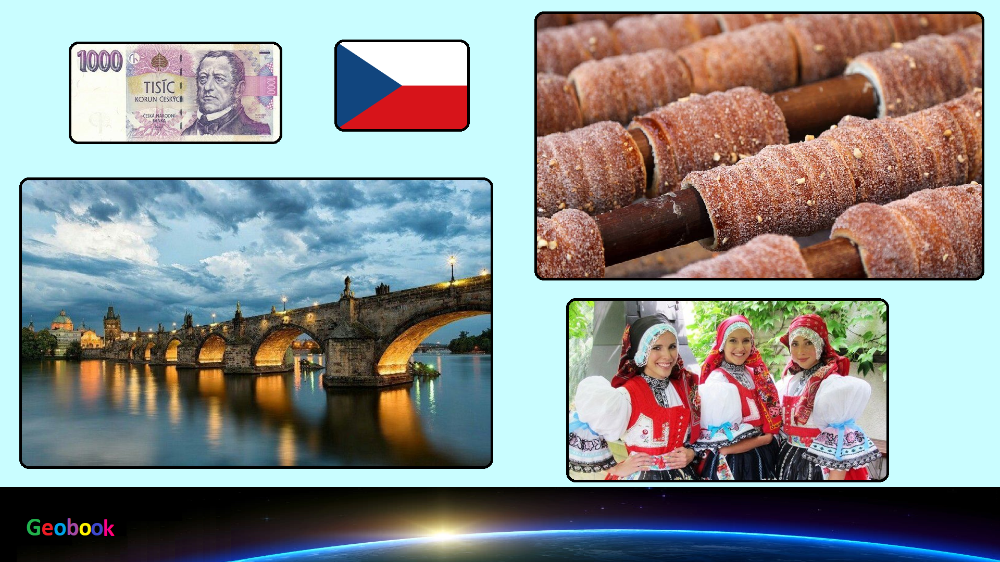

____
Традиционная еда
Чеснечка — Супы в стране готовят разные, самый любимый среди них – чесночный. Способы его приготовления в разных регионах немного отличаются. Где-то в него кладут сыр, где-то картошку и копчености. Чехи особенно налегают на чеснечку с наступлением холодов. Это хорошее противомикробное средство.

Кнедлики — В чешской кухне кнедлики зачастую заменяют хлеб. Делают их из обычной или картофельной муки. Готовят строго на пару, затем нарезают и подают в виде гарнира. Кнедлики хорошо дополняют мясные блюда с густым соусом, в нем их макают, а потом едят.
Брамбораки — Под этим затейливым названием скрываются обычные картофельные лепешки, они чем-то напоминают наши драники. Обязательный ингредиент здесь майоран. Брамбораки едят как отдельное блюдо или подают в виде гарнира к мясу.
Свиное колено — Любому мясу чехи предпочитают свинину. Секрет такой любви прост и легко объясняется. Испокон веков в Чехии это мясо считается самым дешевым, оно стоит гораздо меньше той же говядины.
____
